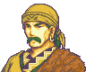

Support Rank C

族長

シンか・・・
すまぬな お前には
無理難題を押しつけてしまった
孫娘を探し出してくれたこと
礼を言う
いえ そのような・・・
楽な道行きではなかったろう
わしと別れてから どうしていた？
はい
あの敗戦の後・・・
私は スーさまの行方を探して
方々を転々としておりました
リキアを抜け 海を渡り
西方の島々へ
そこで スーさまと・・・
命を受けて 幾月か後のことでした
そうか・・・
我らが敗れてから・・・
もうそれほどたつのだな
・・・族長
多くの者たちを失った・・・
まだ若い命も・・・
ですが
族長は生きておられます
たとえ我らが
離れ離れになろうと
族長がおられる限り
一族は必ずそのもとに集いましょう
Support Rank B
リキア エトルリアなど
西にある国々は・・・
我々サカとは
あまりに違っていました
戦では 弓が通らぬような
かたい鎧に身を包む兵士が・・・
そうであろうな
我らの戦いの場は 広大な平原
馬がなければ戦えぬ
しかし せまい土地では
そのような兵が要所を守るのであろう
はい
かくも戦のありようが違えば
我々の戦いが通じぬのも道理
・・・・・・
裏切りや だまし討ちも
あちらでは戦の一手にすぎぬのだろう
ひきょうと思うは我らのみ
しょせん 負けてはどうにもならぬか
・・・しかし
私は認めることなどできません
あのような汚い戦いなど・・・
ならば 学ぶしかあるまい
他国の戦を 他国の考え方を
我らはそれに そまらずともな
Support Rank A
シンよ
はっ・・・
天は 不運ばかりを
もたらすものではない
一族が敗れたこと・・・
悪いことばかりではなかった
お前にとっては
よいことだったかもしれん
と 言いますと・・・？
星々も 大地も
もはや昔のままではない
サカも 部族の間だけで
ものを考える時代ではあるまい
しかし 族長・・・
お前は大陸を旅し
多くを学んだようだ
わしはもはや 古い人間だ
今さら生き方は変えられぬ
だがお前たちはまだ若い
サカをよりよき道へ導くのは
お前たちの役目だ
族長の命として聞け
シン
これからは お前たちが考えるのだ
サカがいかにあるべきかを
はっ・・・